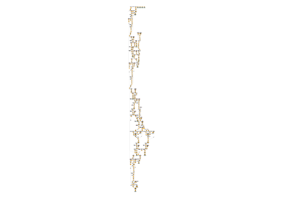

Note
Go to the end to download the full example code.
101: Profile an existing model with onnxruntime
Profiles any onnx model on CPU.
Preparation
import os
import numpy as np
import matplotlib.pyplot as plt
from experimental_experiment.args import get_parsed_args
try:
from onnx_extended.tools.js_profile import (
js_profile_to_dataframe,
plot_ort_profile,
)
except ImportError:
js_profile_to_dataframe = None
try:
filename = os.path.join(
os.path.dirname(__file__ or ""), "data", "example_4700-CPUep-opt.onnx"
)
except NameError:
filename = "data/example_4700-CPUep-opt.onnx"
script_args = get_parsed_args(
"plot_profile_existing_onnx",
filename=(filename, "input file"),
repeat=10,
expose="",
)
for att in ("filename", "repeat"):
print(f"{att}={getattr(script_args, att)}")
filename=data/example_4700-CPUep-opt.onnx
repeat=10
Random inputs.
def create_random_input(sess):
feeds = {}
for i in sess.get_inputs():
shape = i.shape
ot = i.type
if ot == "tensor(float)":
dtype = np.float32
else:
raise ValueError(f"Unsupposed onnx type {ot}.")
t = np.random.rand(*shape).astype(dtype)
feeds[i.name] = t
return feeds
def create_session(filename, profiling=False):
from onnxruntime import InferenceSession, SessionOptions
if not profiling:
return InferenceSession(filename, providers=["CPUExecutionProvider"])
opts = SessionOptions()
opts.enable_profiling = True
return InferenceSession(filename, opts, providers=["CPUExecutionProvider"])
sess = create_session(script_args.filename)
feeds = create_random_input(sess)
sess.run(None, feeds)
[array([[0.67364633, 0.3739771 , 0.2167143 , ..., 0.0397259 , 0.9565488 ,
0.2701109 ],
[0.89877087, 0.69114906, 0.8321059 , ..., 0.23532549, 0.01699591,
0.66235983],
[0.90827596, 0.915263 , 0.4144472 , ..., 0.15723571, 0.32424274,
0.2683946 ],
...,
[0.8178974 , 0.8129691 , 0.09412121, ..., 0.44534183, 0.75204986,
0.22343035],
[0.0069139 , 0.3815737 , 0.3677398 , ..., 0.93656915, 0.94588566,
0.88205916],
[0.9922173 , 0.22265965, 0.61133444, ..., 0.90982956, 0.690942 ,
0.7420132 ]], shape=(128, 1024), dtype=float32), array([[0.14253227, 0.38720012, 0.53706247, ..., 0.26952523, 0.6332074 ,
0.31920958],
[0.42600307, 0.07978506, 0.48377797, ..., 0.74072844, 0.664034 ,
0.35631385],
[0.19028954, 0.2972762 , 0.22369751, ..., 0.22579417, 0.6732325 ,
0.8497375 ],
...,
[0.8834965 , 0.06343047, 0.98343366, ..., 0.35605672, 0.8712097 ,
0.19556472],
[0.83338565, 0.751817 , 0.71200323, ..., 0.9363153 , 0.2052661 ,
0.7926359 ],
[0.59747624, 0.7515416 , 0.2652343 , ..., 0.9492097 , 0.40020663,
0.581335 ]], shape=(1024, 30752), dtype=float32), array([[0.4893526 , 0.7526119 , 0.44744512, ..., 0.38337618, 0.9274911 ,
0.16191374],
[0.26200917, 0.25979534, 0.08453593, ..., 0.84896284, 0.3119022 ,
0.0575573 ],
[0.01795579, 0.6091562 , 0.58775187, ..., 0.98947895, 0.8083738 ,
0.48671627],
...,
[0.4489616 , 0.7817594 , 0.93927765, ..., 0.2210471 , 0.06850494,
0.5867213 ],
[0.17486426, 0.96057266, 0.29198763, ..., 0.43322933, 0.93231183,
0.37394306],
[0.38200024, 0.5883139 , 0.6242925 , ..., 0.9769525 , 0.88828635,
0.48151836]], shape=(10, 128), dtype=float32), array([[[[ 6.572721 , 7.31566 , 7.5647035, ..., 6.286343 ,
6.523593 , 6.166994 ],
[ 7.913063 , 7.668177 , 7.7624226, ..., 7.553665 ,
7.07895 , 6.8392572],
[ 7.7748446, 7.375013 , 7.3671594, ..., 6.1356835,
5.7152476, 4.83372 ],
...,
[ 9.299427 , 9.648714 , 9.405181 , ..., 8.057199 ,
8.355863 , 7.826673 ],
[ 8.954363 , 8.673134 , 9.692758 , ..., 8.341507 ,
8.607593 , 7.8816667],
[ 8.16986 , 9.125537 , 9.53107 , ..., 8.29312 ,
7.8422904, 8.170869 ]],
[[ 6.092726 , 6.607471 , 6.6800084, ..., 6.4131446,
5.5899663, 5.5880895],
[ 6.871369 , 6.443825 , 6.617324 , ..., 6.1068096,
6.0829105, 5.915792 ],
[ 5.8277407, 7.026441 , 5.9253283, ..., 6.5683923,
4.825052 , 4.4992447],
...,
[ 7.218679 , 7.8551064, 8.679404 , ..., 7.343205 ,
6.9578967, 6.7379384],
[ 7.6582327, 8.235565 , 8.855584 , ..., 6.373973 ,
7.3449774, 7.185092 ],
[ 7.775473 , 7.022059 , 8.3526745, ..., 5.952048 ,
7.434009 , 7.200022 ]],
[[ 7.0486383, 7.5318747, 7.027811 , ..., 6.315956 ,
5.747219 , 5.4245396],
[ 6.072798 , 7.563774 , 6.7727146, ..., 6.2636337,
6.056901 , 5.477646 ],
[ 5.868103 , 7.240059 , 6.7549486, ..., 5.7169466,
5.52596 , 4.929716 ],
...,
[ 8.375062 , 8.305019 , 8.131115 , ..., 6.8323812,
7.41763 , 6.3947525],
[ 8.735088 , 8.308467 , 9.390127 , ..., 7.9676027,
7.9538136, 6.986556 ],
[ 7.7860184, 8.101588 , 8.918167 , ..., 8.083633 ,
7.2078943, 7.89909 ]],
...,
[[ 5.8674383, 6.5180044, 6.3952312, ..., 6.141112 ,
5.8560114, 5.789114 ],
[ 7.172624 , 7.3204327, 7.2740436, ..., 7.1274543,
6.1722517, 5.800141 ],
[ 6.4870887, 6.385667 , 6.7140827, ..., 5.8577566,
4.7357655, 4.0477886],
...,
[ 7.583505 , 7.995237 , 8.754033 , ..., 6.973896 ,
7.515216 , 7.118533 ],
[ 7.7051105, 8.240324 , 8.516083 , ..., 6.9652963,
7.7628074, 7.399855 ],
[ 7.604323 , 8.3805895, 7.6904216, ..., 7.096894 ,
7.5599947, 6.9015393]],
[[ 5.381939 , 4.993763 , 5.1698093, ..., 4.759744 ,
4.5153003, 4.8372717],
[ 5.742648 , 5.9160976, 6.0228033, ..., 5.1088953,
5.0612593, 4.3462954],
[ 4.7711015, 5.6155148, 5.5332823, ..., 4.6039104,
3.2410488, 3.3168278],
...,
[ 5.9765854, 6.755213 , 6.84769 , ..., 6.135333 ,
5.5534463, 5.5108314],
[ 6.705765 , 6.8924932, 7.5139194, ..., 5.542222 ,
6.6525435, 6.2478075],
[ 6.629789 , 6.255279 , 7.0716896, ..., 6.476652 ,
6.585122 , 5.6352563]],
[[ 6.651361 , 6.5302997, 6.985228 , ..., 6.626254 ,
6.033877 , 5.83837 ],
[ 7.412697 , 7.5862317, 6.923346 , ..., 7.4334745,
6.586128 , 6.5115614],
[ 7.229441 , 7.453989 , 6.4186845, ..., 6.8990226,
5.1096506, 4.299156 ],
...,
[ 8.610063 , 8.936979 , 9.882551 , ..., 7.108725 ,
8.010598 , 7.6287766],
[ 8.745059 , 8.144643 , 10.170176 , ..., 7.6565657,
8.440232 , 7.466935 ],
[ 8.683825 , 8.457146 , 9.066635 , ..., 7.896968 ,
7.872397 , 7.7646484]]]],
shape=(1, 32, 124, 124), dtype=float32), array([[[[ 251, 377, 11, ..., 486, 242, 244],
[ 623, 625, 877, ..., 982, 614, 616],
[ 1364, 999, 1002, ..., 1477, 1108, 1112],
...,
[13888, 14267, 14147, ..., 14250, 14005, 14135],
[14510, 14515, 14392, ..., 14744, 14750, 14507],
[15130, 15257, 15139, ..., 15243, 15122, 15000]],
[[ 375, 377, 8, ..., 486, 242, 492],
[ 621, 501, 877, ..., 981, 613, 740],
[ 1119, 999, 1001, ..., 1477, 1232, 1112],
...,
[14261, 14265, 14268, ..., 14374, 14005, 14259],
[14509, 14515, 14516, ..., 14622, 14502, 14752],
[15130, 15259, 15015, ..., 15367, 15371, 15000]],
[[ 375, 376, 11, ..., 486, 366, 244],
[ 621, 626, 876, ..., 981, 985, 991],
[ 1364, 997, 1001, ..., 1105, 1232, 1484],
...,
[14261, 14267, 14268, ..., 14374, 14128, 14132],
[14633, 14391, 14765, ..., 14744, 14750, 14876],
[15130, 15256, 15263, ..., 15364, 14999, 15124]],
...,
[[ 375, 128, 11, ..., 360, 242, 492],
[ 622, 625, 877, ..., 981, 737, 988],
[ 1364, 999, 1001, ..., 1353, 1232, 1363],
...,
[14137, 14267, 14268, ..., 14250, 14376, 14259],
[14509, 14515, 14766, ..., 14622, 14751, 14752],
[14881, 15259, 15263, ..., 15241, 15123, 15000]],
[[ 375, 252, 11, ..., 362, 242, 244],
[ 621, 749, 878, ..., 981, 737, 988],
[ 1240, 997, 1001, ..., 1104, 1480, 1487],
...,
[14137, 14267, 14268, ..., 14374, 14128, 14132],
[14509, 14514, 14517, ..., 14744, 14750, 14754],
[14880, 15133, 15263, ..., 15364, 15371, 15124]],
[[ 127, 253, 11, ..., 486, 366, 244],
[ 621, 624, 877, ..., 980, 614, 988],
[ 1365, 999, 1000, ..., 1105, 1109, 1484],
...,
[14013, 14267, 14269, ..., 14126, 14005, 14135],
[14632, 14391, 14517, ..., 14620, 14751, 14876],
[15130, 15008, 15015, ..., 15243, 15122, 15000]]]],
shape=(1, 32, 31, 31), dtype=int64), array([[8.430683, 8.436563, 7.888414, ..., 8.39944 , 8.175052, 8.69075 ]],
shape=(1, 30752), dtype=float32), array([[122770.234, 123011.805, 122777.08 , ..., 122941.05 , 122187.68 ,
122675.586]], shape=(1, 1024), dtype=float32), array([[6.2739016e+07, 6.4664312e+07, 6.3202136e+07, 6.4282960e+07,
6.1992084e+07, 6.1473008e+07, 6.2080248e+07, 6.3337928e+07,
6.1139744e+07, 6.2674232e+07, 6.3422416e+07, 6.2261376e+07,
6.2363952e+07, 6.1583640e+07, 6.3783296e+07, 6.2630168e+07,
6.3190720e+07, 6.0901216e+07, 6.3126228e+07, 6.0762860e+07,
6.1982552e+07, 6.1917848e+07, 6.1929512e+07, 6.3421872e+07,
6.2858688e+07, 6.1803388e+07, 6.2356792e+07, 6.2847640e+07,
6.3519316e+07, 6.2187556e+07, 6.2388052e+07, 6.3454528e+07,
6.3538048e+07, 6.2648664e+07, 6.2179112e+07, 6.2005160e+07,
6.3277572e+07, 6.2035696e+07, 6.3825736e+07, 6.2217368e+07,
6.3802832e+07, 6.2688220e+07, 6.1187480e+07, 6.2312220e+07,
6.2278912e+07, 6.3456320e+07, 6.1149080e+07, 6.4387080e+07,
6.2921224e+07, 6.2581712e+07, 6.4565736e+07, 6.0993904e+07,
6.0080856e+07, 6.2800876e+07, 6.3389944e+07, 6.3730996e+07,
6.2593824e+07, 6.3668216e+07, 6.1055560e+07, 6.1306016e+07,
6.3994056e+07, 6.1471120e+07, 6.4349812e+07, 6.2266896e+07,
6.2970592e+07, 6.4490056e+07, 6.2532616e+07, 6.4080304e+07,
6.2156488e+07, 6.2086168e+07, 6.2662580e+07, 6.3979672e+07,
6.2250592e+07, 6.3487604e+07, 6.3460800e+07, 6.2902784e+07,
6.4105276e+07, 6.1399140e+07, 6.3746704e+07, 6.3015360e+07,
6.2338704e+07, 6.3176016e+07, 6.4492908e+07, 6.3423952e+07,
6.1731092e+07, 6.1323584e+07, 6.1451456e+07, 6.1240972e+07,
5.9594848e+07, 6.3238904e+07, 6.1853712e+07, 6.3323728e+07,
6.2528296e+07, 6.1706592e+07, 6.2038552e+07, 6.2978024e+07,
6.2385612e+07, 6.3306100e+07, 6.2205956e+07, 6.1858132e+07,
6.1410096e+07, 6.1061708e+07, 6.4200192e+07, 6.2635308e+07,
6.3575024e+07, 6.3929544e+07, 6.3465084e+07, 6.4676784e+07,
6.0908080e+07, 6.2154216e+07, 6.3209560e+07, 6.2845320e+07,
6.1139792e+07, 6.2038976e+07, 6.1492520e+07, 6.0191956e+07,
6.1409016e+07, 6.2193432e+07, 6.2391856e+07, 6.1221656e+07,
6.3605152e+07, 6.2272100e+07, 6.3158008e+07, 6.4713712e+07,
6.1891584e+07, 6.2138824e+07, 6.4127064e+07, 6.4328448e+07]],
dtype=float32), array([[3.9528430e+09, 3.7122488e+09, 4.1543178e+09, 3.9237617e+09,
4.0246436e+09, 4.0814589e+09, 3.9612964e+09, 4.2924490e+09,
3.8888079e+09, 4.3222702e+09]], dtype=float32)]
Profiling
sess = create_session(script_args.filename, profiling=True)
for _ in range(script_args.repeat):
sess.run(None, feeds)
prof = sess.end_profiling()
if js_profile_to_dataframe is not None:
df = js_profile_to_dataframe(prof, first_it_out=True)
print(df.columns)
df.to_csv("plot_profile_existing_onnx.csv")
df.to_excel("plot_profile_existing_onnx.xlsx")
fig, ax = plt.subplots(1, 2, figsize=(10, 5))
plot_ort_profile(df, ax[0], ax[1], "dort")
fig.tight_layout()
fig.savefig("plot_profile_existing_onnx.png")
else:
print("Install onnx-extended first.")
Index(['cat', 'pid', 'tid', 'dur', 'ts', 'ph', 'name',
'args_thread_scheduling_stats', 'args_output_size',
'args_parameter_size', 'args_activation_size', 'args_node_index',
'args_provider', 'args_op_name', 'op_name', 'event_name', 'iteration',
'it==0'],
dtype='str')
Total running time of the script: (0 minutes 1.649 seconds)
Related examples

201: Evaluate different ways to export a torch model to ONNX
201: Evaluate different ways to export a torch model to ONNX

101: Onnx Model Optimization based on Pattern Rewriting
101: Onnx Model Optimization based on Pattern Rewriting